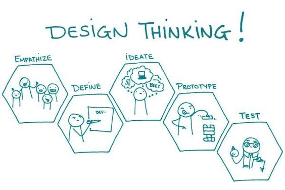

Design thinking is a human-centered approach to problem-solving that emphasizes empathy, creativity, and iterative experimentation. It's a mindset and a set of methodologies used by designers and non-designers alike to tackle complex problems and generate innovative solutions. Let's explore some key methodologies within the realm of design thinking:
The empathize phase involves understanding the needs, motivations, and behaviors of the people for whom you are designing. This often involves conducting user research, interviews, and observations to gain deep insights into users' experiences and challenges.
In the define phase, you synthesize the insights gathered during the empathize phase to define the problem statement or opportunity you want to address. This involves framing the problem in a way that is clear, specific, and actionable, ensuring alignment with user needs and business goals.
Ideation is the phase where you generate a wide range of creative ideas and solutions to address the defined problem. This often involves brainstorming sessions, sketching, prototyping, and exploring unconventional approaches to spark innovation and creativity.
In the prototype phase, you develop low-fidelity and high-fidelity prototypes to test and iterate on your ideas. Prototypes can take various forms, including paper prototypes, digital wireframes, interactive mockups, and physical models, allowing you to quickly gather feedback and refine your concepts.
The test phase involves gathering feedback from users through usability testing, user interviews, and other evaluative methods to validate your prototypes and iterate on your designs. This iterative process helps uncover usability issues, identify opportunities for improvement, and refine your solutions based on user feedback.
By following these design thinking methodologies, you can foster a culture of innovation, collaboration, and user-centricity within your organization, leading to the development of products and services that truly resonate with users' needs and aspirations.
Home